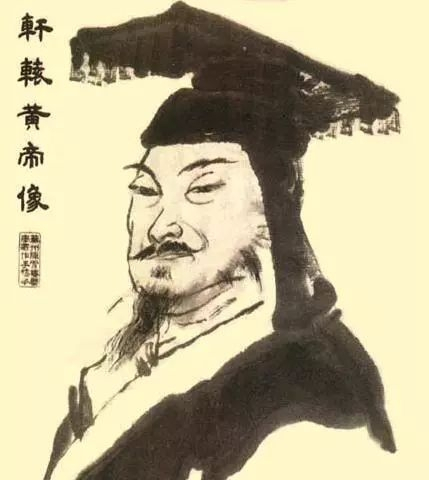
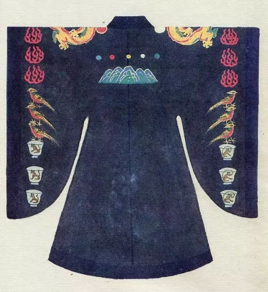
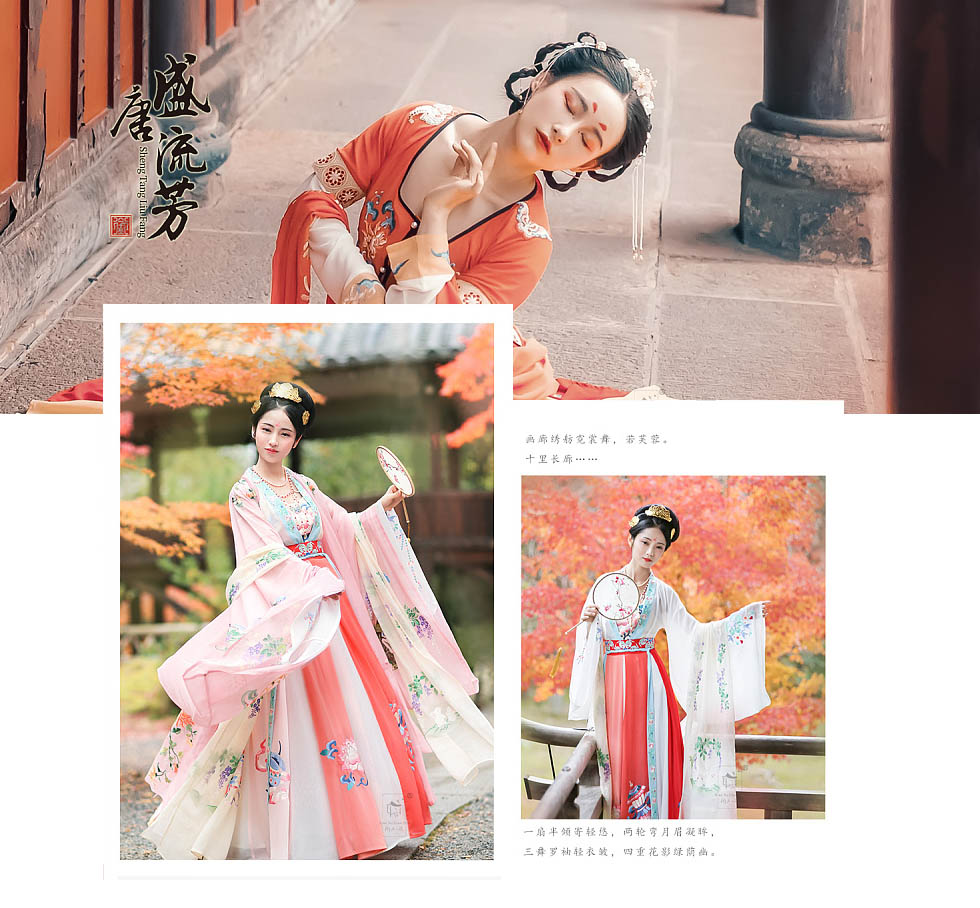

伴随着传统文化的复兴，汉服也越来越受到人们的重视，一度成为流行。然而人们对于汉服却知之甚少，不仅对于“汉服”这个概念本身不理解，而且对于汉服结构的名称也缺乏了解，更不用说它背后的文化内涵了。
所谓的“汉服”，又称汉衣冠、汉装、华服，总的来说就是指汉民族的传统服饰。它不是指汉代的服饰，而是指汉族传统服饰。因为汉代的前身是华夏族，故而整个汉族的传统服饰可以溯源至周代，经过秦朝的发展，到了汉代逐渐臻于成熟。如蔡邕在《独断》中便说道：“天子常服，汉服受之秦。”
关于汉服的最早起源，传统的观点认为是在黄帝时期。如《史记》曰：“华夏衣裳为黄帝所制”。并认为“黄帝之前，未有衣裳屋宇。及黄帝造屋宇，制衣服，营殡葬，万民故免存亡之难。”当然，这种看法是在圣人史观下的一种认识。但是随着现代考古学的兴起，考古学家认为中国在仰韶文化时期，就出现了原始的农业和纺织业，开始用麻布来制作衣服，黄帝的妻子嫘祖就是蚕和丝的发明者。自此以后，人们的衣冠服饰日臻完备。当然衣服出现于这时期没有问题，但是作为一种冠服制度却是出现于商周时期，因为冠服制度具有文化意涵，它具有区分社会秩序和等级的功能。故而更加准确的讲，汉服起源于商周时期。
其实，在传统中国，服饰的地位是非常重要的，除了基本的遮羞、取暖、审美的意涵外，最重要的还是其所代表的文化、政治含义。我们知道中国古称“华夏”，华夏这个词本身就具有文明的含义。如《尚书正义》注：“冕服华章曰华，大国曰夏。”而《左传正义·定公十年》疏则曰：“中国有礼仪之大，故称夏；有章服之美，谓之华。”这里提到两个概念，即中国和华夏，它们都是一个文化概念，即代表了一种文明的发达程度。基于此，中国便有了“衣冠上国，礼仪之邦”的美称。
提起汉服，就得知道它所用的材料，那就是布和帛。其结构从上至下分为领、襟、衽、衿、裾、袖、袂、带、韨等十个部分。前后具有对称性，也就是说在制作过程中会取两幅同等长的布，分别对折，作为前襟后裾，缝合后背中缝。如果前襟无衽即为直领对襟衣。若再取一幅布，裁为两幅衽，缝在左右两襟上，则称之为斜领右衽衣。其制作流程极为繁复，我们就不一一介绍。
有一点我们需要特别注意，就是我们在说汉服的时候，它已经不再是简单的一套服装，我们不能用我们今天的着装状况去理解古人。其实汉服包含着一整套的服饰系统，包括衣裳、首服、发式、面饰、鞋履、配饰等。就衣裳本身来说，也是两个概念，即上衣下裳，衣接近于我们今天的上衣，而裳则是裙裾。
我们今天兴起了一股汉服热，但汉服的背后是有着一整套传统文化内涵的，如果对之没有深刻的理解，则穿汉服和洋装没有什么区别。都是为了追赶时尚，只是将其视为一种审美潮流来追捧而已。我们说：“中国有礼仪之大，故称夏；有章服之美，谓之华。”汉服不是一种简单的服饰，它所承载的是具有五千年文明的礼仪之邦，象征着中国的灿烂文明和精神气质。
